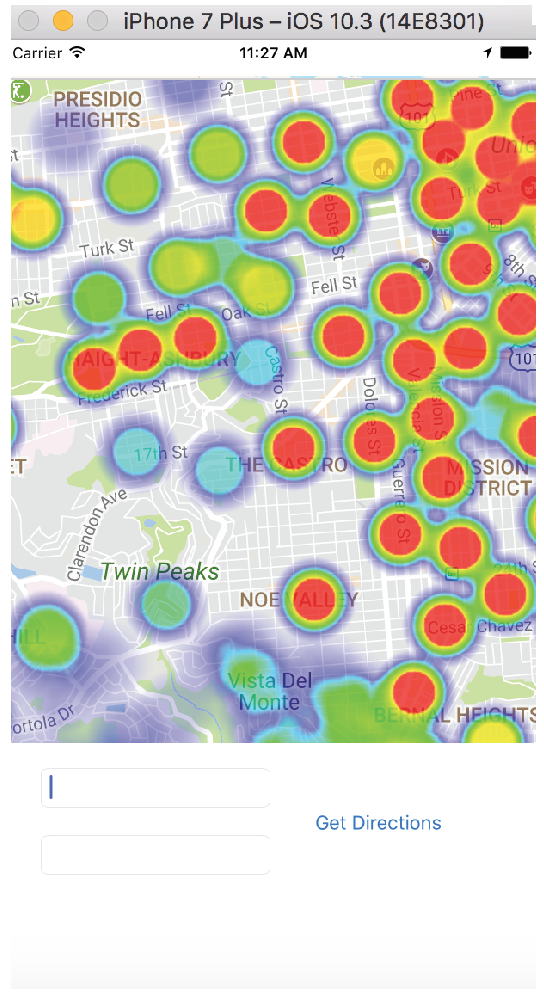
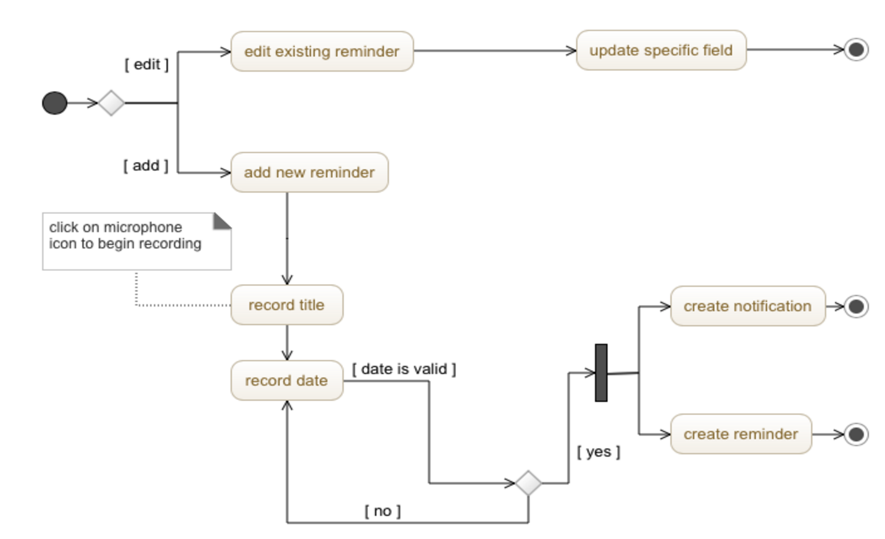

SafeSteps iOS App
Type
Personal Project
Motivation
As a new resident walking the streets of San Francisco I often found that nagivation applications on my phone led me through areas that I felt unsafe in. As a result, I began to use ride sharing apps or public transit to most places even if they were within walking distance. I decided there should be a way for me to find a safer route to walk along. After some research I found no other sucuessful application that achieved this, thus I started developing SafeSteps.
Overview
This project is currently being developed. I am using the integration of Apple Maps with a backend that utilizes an API endpoint from a crime database from the city of San Francisco. I hope to launch this application in early summer.
Technologies Used
Swift, Google Maps API Integration, and in process of exploring other helpful technology solutions.
Wikipedia Search Engine
Type
School Project -- Web Database and Information Systems
Motivation
Overview
First my team built a MapReduce based indexer to process a large dataset. Through a series of MapReduce jobs we created an inverted index for many documents. Next, we created an index server to handle search queries and return relevant results as a JSON object. Lastly, we created a search interface app to prvide a GUI for users to enter a query and display results using data from the Wikipedia API.
Technologies Used
Python, Hadoop, Flask, SQL, HTML, JavaScript
Remambo Speech Recognition iOS App
Type
School Project -- Software Engineering
Motivation
Overview
I was the project lead and 1 of 4 developers for this project. This application is dedicated for input and recall witharger reminder cells that easier to click on and edit for users with assessibility issues. We minimized the number of elements on screen for easier use with VoiceOver and include descriptive labels for elements still present to streamline input process.
Technologies Used
Swift
Please contact me via email if you would like a copy of the latest version of my resume. You can find my contact information on the main paige ("Home").